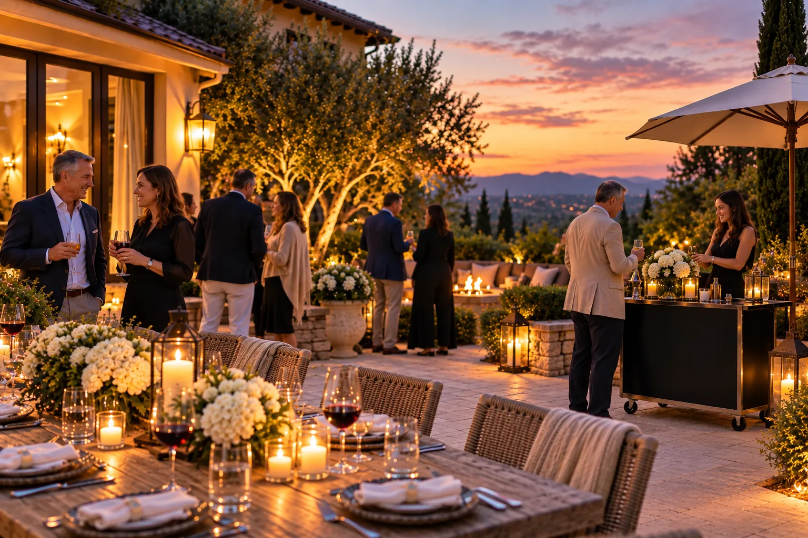
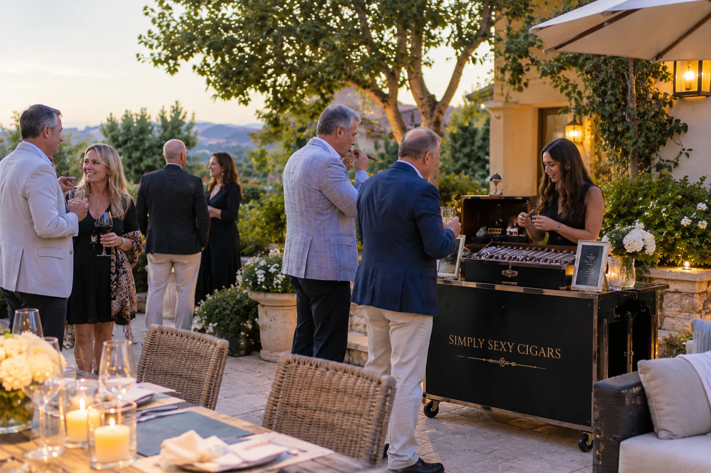

The dinner has been cleared, the last toast has been made, and something in the room begins to shift. Chairs turn. Voices settle into a warmer register. A few guests drift toward the door and out into the evening air. Long after the plates are gone, this is often the part of the night people remember: the unhurried hour when a celebration stops performing and simply becomes good company.

Private Celebrations
The Art of the After-Dinner Cigar.
Turning a great celebration into an unforgettable evening.
The Second Act of the Evening.
Every memorable evening has two halves. The first is the celebration itself: the dinner, the speeches, the reason everyone came. The second begins once the formal part is over, when the schedule loosens and guests are free to linger. An after-dinner cigar belongs to that second act. It gives the night a gentle punctuation, a shared ritual that draws people together and signals, without anyone having to say it, that there is no rush to leave.
Offered thoughtfully, a cigar becomes less about the tobacco and more about the pause it creates. It is a reason to step outside, to keep a conversation going, and to let the evening find its own pace.
Why the Setting Matters.
The right cigar wants the right room, and more often the right outdoor space. A patio strung with light, a terrace overlooking a vineyard, a fire feature on a private estate, the quiet corner of a country club: these settings do half the work. They invite guests to gather without a plan, to sit a little closer, and to talk longer than they intended.
Across Northern California, from Napa and Sonoma to the estates and clubs of the Bay Area, the after-dinner hour and the outdoors were made for each other. A thoughtfully arranged lounge, a few comfortable chairs, and an open sky can give a good party a second life.
More Than Putting Cigars on a Table.
There is a difference between leaving a box of cigars on a table and creating an attended cigar experience. The first is a nice gesture. The second is hospitality.
An attended experience begins with a curated selection, chosen to suit the occasion and the guests. Someone is on hand to help each person find a cigar that fits their taste, to cut and light it properly, and to present it with a little care. The details matter: a clean setup, a steady flame, a knowledgeable hand. Done well, it feels effortless, which is precisely the point. The host should be free to enjoy the evening, not to manage another moving part of it.

Making It Comfortable for Every Guest.
Not everyone at the table is a seasoned cigar smoker, and that is part of the appeal. When knowledgeable service is on hand, the first-time guest is as welcome as the enthusiast. A good attendant reads the room: guiding a newcomer toward something approachable, talking through the how and the why without ceremony, and never making anyone feel they are doing it wrong.
That ease is what turns a narrow pleasure into a shared one. People who would never have picked up a cigar on their own often find themselves drawn in, simply because someone made it inviting.
Celebrations Worth Lingering Over.
Some occasions ask for exactly this kind of second act. A milestone birthday that deserves more than a dinner reservation. An anniversary marked with the people who were there from the beginning. A retirement, or a graduation, the closing of one chapter and the opening of another. A private estate gathering, an upscale backyard celebration, an intimate dinner for clients or colleagues who have become something closer to friends.
In each case, the after-dinner cigar does the same quiet work. It gives the evening a center, a reason to stay, and a moment that feels set apart from the ordinary run of parties.
The Final Impression.
People rarely remember an evening by how it began. They remember how it ended: the last conversation, the easy laughter, the sense that no one wanted to be the first to leave. The close of a celebration is its final impression, and it tends to linger longer than the first course ever will.
That is the part Simply Sexy Cigars was built to create. As an attended cigar experience, it becomes a natural gathering point after dinner, a considered detail that lets a host step back and enjoy the evening they worked to create. If you are planning a milestone birthday, an anniversary, a retirement, or another private celebration worth lingering over, it is a second act worth remembering.
Planning a milestone birthday, an anniversary, a retirement, or a private celebration worth lingering over?
Explore the Private Celebration Experience